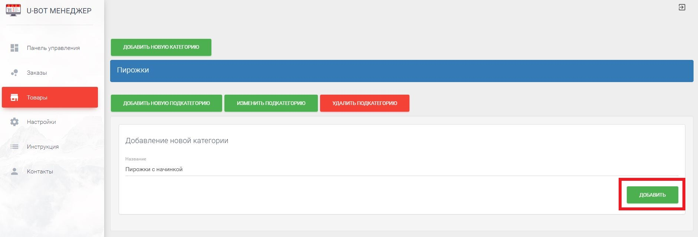
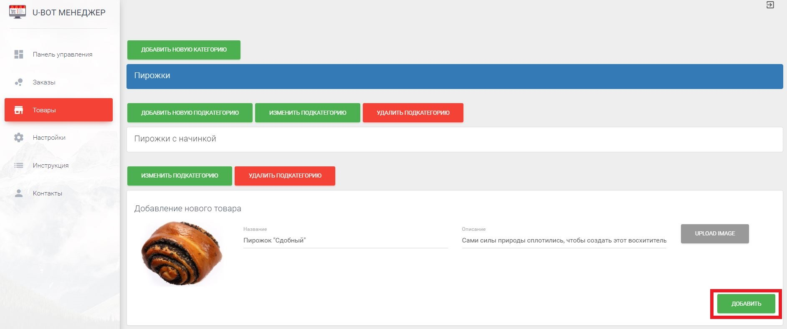

<div class="main-content">
    <div class="container-fluid">
        <h2>Инструкция</h2>
        <p>В данном разделе предоставлена информация по использованию данного продукта. <b>Очень важно ознакомиться с ней</b>, дабы правильно пользоваться системой. </p>
        <div class="row">
            <h3 class="cursor-pointer" data-toggle="collapse" data-target="#" data-target="#1">1. Наполнение каталога</h3>
            <div id="1" class="collapse">
                <h4 class="cursor-pointer" data-toggle="collapse" data-target="#" data-target="#1_1">1.1 Создание категорий и подкатегорий.</h4>

                <div id="1_1" class="collapse">
                    <p>В нашей системе добавление товаров в каталог происходит из специального раздела,
                        <a target="_blank" href="https://ubot-beta.herokuapp.com/items">https://ubot-beta.herokuapp.com/items</a>. Для начала добавления товаров, нужно создать категорию товаров. Кажадя категория может содержать подкатегории. И уже в подкатегории,
                        вы можете добавлять товары.
                        
                    </p>
                    <p>Добавление подкатегории.
                        
                    </p>
                    <p>Открывать категории для просмотра и редактирования можно по клику на строку с названием категории или подкатегории. Любую категорию или подкатегорию Вы можете <span class="text-danger">удалить</span>, вместе с ней будут удалены все
                        товары которые содержаться в ней.
                        <b>Важно</b>, если ранее клиенты сделали заказ товаров, а потом этот товар или его категория были удалены, на таблице с заказами в заказе также товар будет удален.
                    </p>
                </div>
                <h4 class="cursor-pointer" data-toggle="collapse" data-target="#" data-target="#1_2">1.2 Добавление товаров.</h4>

                <div id="1_2" class="collapse">
                    <p>Добавление товаров происходит в специальном отделе в подкатегории, для добавления товара Вы должны выбрать его изображение, название и описание. <b>Все поля являются обязательными</b>.
                        
                    </p>
                    <p>
                        Товар можно удалить, нажав на красную кнопку удаления или отредактирвать (<span class="text-purple">фиолетовая</span> кнопка).
                        
                    </p>
                    <p>
                        Для того, что бы клиенты могли заказать товар в чат-боте, товару нужно добавить размеры и цены. Для каждого размера - своя цена. Это происходит по нажатию на <span class="text-success">зеленую</span> кнопку.
                        
                    </p>
                    <p>
                        Перед вами появится таблица размеров. В первую очередь, для добавления нового размера, нажмите на иконку <span class="material-icons">add_box</span>. Откроются поля для заполнения(не перепутайте с полями, которые уже открыты, это
                        поля для фильтрации). Вы должны заполнить название, вес и его измерение (мл, л, кг, г и тд), а также указать цену. Цена может быть дробной, нужно указывать в таком случае через точку,
                        <b>варинат 12,2 не верен,
                                нужно 12.2.</b> После того как Вы заполните нужные поля, нажимаем на кнопку <span class="material-icons">save</span> и сохраняем размер. В будущем его можно будет удалить или редактировать.
                    </p>


                </div>


            </div>

            <h3 class="cursor-pointer" data-toggle="collapse" data-target="#" data-target="#2">2. Обработка заказов</h3>
            <div id="2" class="collapse">
                <h4 class="cursor-pointer" data-toggle="collapse" data-target="#" data-target="#2_1">2.1 Просмотр списка заказов.</h4>

                <div id="2_1" class="collapse">
                    <p>Сведения о заказе можно увидеть в разделе <a target="_blank" href="https://ubot-beta.herokuapp.com/orders">Заказы</a></p>
                    <p>После того, как клиент в чат-боте сделал заказ, в таблице появляется запись со статусом "Получен" в крайнем столбце. Это значит, что клиент ожидает ваших действий.
                        
                    </p>
                </div>
                <h4 class="cursor-pointer" data-toggle="collapse" data-target="#" data-target="#2_2">2.2 Изменение статуса заказов.</h4>

                <div id="2_2" class="collapse">
                    <p>Чтобы уведомить клиента о том, что вы собираетесь выполнить его заказ, необходимо нажать на кнопку в крайнем столбце таблицы и выбрать необходимое:
                        
                    </p>
                    <ul>
                        <p>
                            <li>Подтвердить - вы подтверждаете, что можете выполнить его заказ </li>
                        </p>
                        <p>
                            <li>Отклонить - не можете выполнить его заказ</li>
                        </p>
                        <p>
                            <li>Готов - заказ выполнен и клиент может его забрать</li>
                        </p>
                        <p>
                            <li>Забрали - клиент рассчитался и получил заказ</li>
                        </p>
                    </ul>.

                    <b>!!</b>
                    <p>Для того, чтобы клиент мог увидеть время, в течение которого заказ приготовится, необходимо ввести количество минут <b>перед изменением статуса на "Подтвердить". </b>Время вводится здесь
                        
                    </p>
                    <p>При изменении статуса, меняется и цвет фона строки, в которой был изменен статус:
                        
                    </p>
                    <ul>
                        <p>
                            <li>Подтвержденный - фон становится <span class="text-blue">голубым █</span></li>
                        </p>
                        <p>
                            <li>Отклоненный - фон становится <span class="text-danger">красным █</span></li>
                        </p>
                        <p>
                            <li>Готов - фон становится<span class="text-success"> зеленым █</span></li>
                        </p>
                        <p>
                            <li>Забранный - фон становится <span class="text-grey">серым █</span></li>
                        </p>
                    </ul>
                </div>

            </div>

        </div>
    </div>
</div>